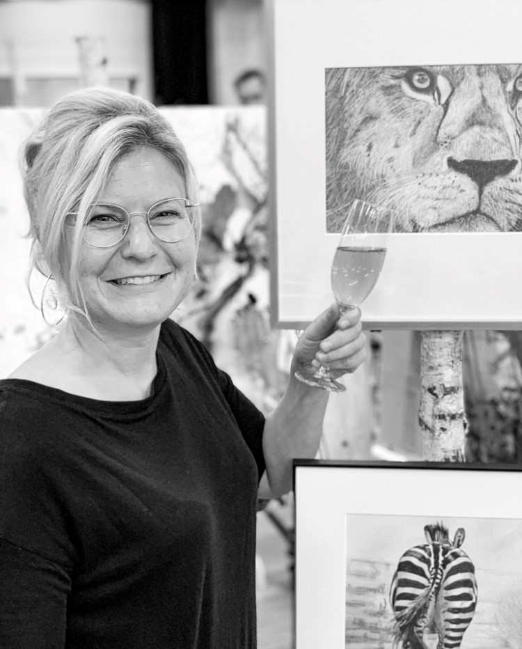

Farbige Lebendigkeit
Die Ideen für Kistlers kreatives Tun entstehen beim bewussten Beobachten der Umgebung. „In der Natur finde ich die schönsten Kunstwerke“, sagt sie. Durch diese wird sie beflügelt, ihre Ideen in Farbe zu tauchen. Kistler malt, fotografiert und gestaltet Skulpturen. Sie lässt sich thematisch und technisch nicht einschränken. Im Vordergrund sind meist Tier und Mensch, denen sie mit Farbe und Strich Lebendigkeit verleiht. „Offen, spontan, experimentierfreudig“ sind die Attribute, welche das Wesen und das Schaffen von Kistler am besten beschreiben. Ihre Kreativität scheint grenzenlos. Als Sekundarlehrerin in Buttikon unterrichtet sie das Fach „Bildnerisches Gestalten“ und setzt so ihr grosses Talent auch beruflich ein.

